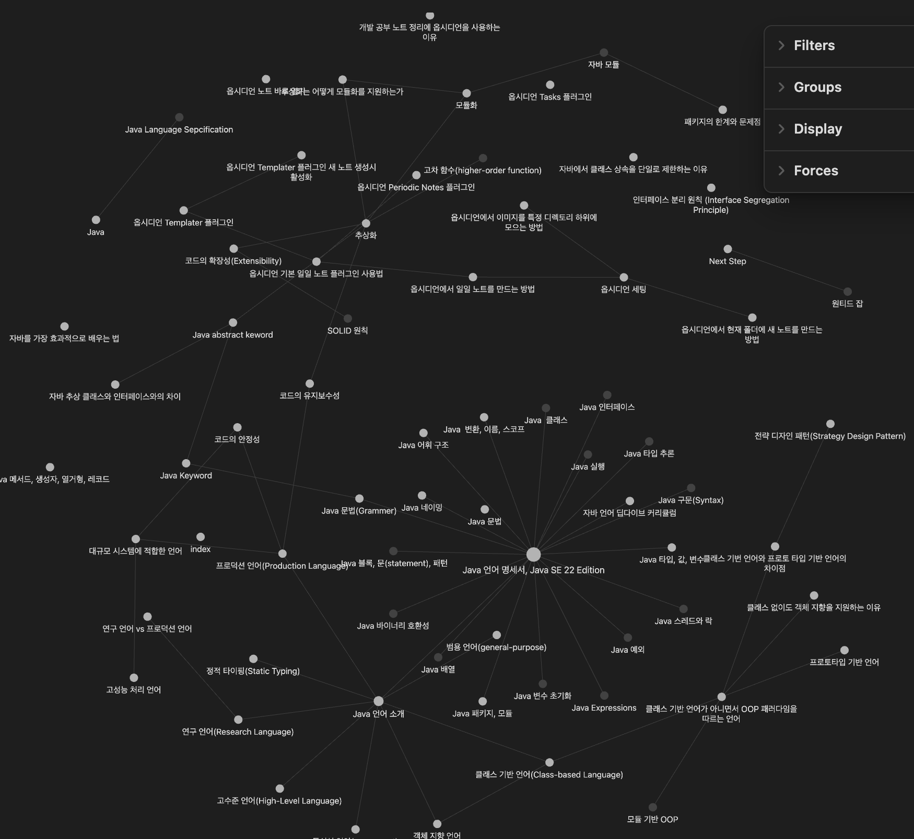

개발자로서 새로운 기술과 지식을 습득하는 것은 일상입니다. 매일매일 쏟아지는 정보와 학습 내용을 효율적으로 정리하고 관리하는 것은 생산성을 높이는 데 필수적입니다. 여러 노트 앱과 도구들이 있지만, 그 중에서도 최근 주목받는 것이 바로 옵시디언(Obsidian) 입니다. 왜 많은 개발자들이 옵시디언을 선택하는지 그 이유를 알아보겠습니다.
1. Markdown 기반의 편집 환경
옵시디언은 Markdown 언어를 기반으로 합니다. 이는 가벼우면서도 가독성이 높은 문서 작성을 가능하게 합니다. 코드 스니펫, 명령어, 리스트 등을 손쉽게 작성할 수 있어 개발자들에게 친숙합니다.
# 클래스 다이어그램
- **클래스명**
- 속성
- 메서드위처럼 간단한 문법으로 구조화된 노트를 작성할 수 있습니다.
2. 노트 간의 자유로운 연결
학습 내용을 정리하다 보면, 서로 연관된 개념이나 참고할 자료들이 생깁니다. 옵시디언은 백링크(Backlink) 기능을 통해 노트 간의 유기적인 연결을 지원합니다. 이는 마치 위키피디아처럼 노트들이 서로 연결되어 지식의 맵을 형성하게 합니다.
3. 그래프 뷰를 통한 시각화
옵시디언의 그래프 뷰(Graph View) 기능은 노트들 간의 연결 상태를 한눈에 보여줍니다. 이를 통해 내가 어떤 분야를 집중적으로 공부했는지, 어느 부분이 부족한지 파악하기 쉽습니다.

4. 플러그인으로 확장성 강화
오픈소스 커뮤니티에서 제공하는 다양한 플러그인을 통해 기능을 확장할 수 있습니다. 코드 하이라이팅, 테이블 생성, 수학 공식 렌더링 등 개발자에게 유용한 기능들을 추가로 적용할 수 있습니다.
아래 플러그인은 모두에게 추천하는 좋은 플러그인 입니다.
5. 로컬 기반으로 보안 및 소유권 확보
옵시디언은 노트를 로컬에 저장합니다. 이는 클라우드 기반의 노트 앱에서 발생할 수 있는 보안 문제나 서비스 종료에 대한 걱정 없이 데이터를 안전하게 보관할 수 있음을 의미합니다. 또한, Git과 연동하여 버전 관리를 할 수도 있습니다.
6. 플랫폼 간의 호환성
Windows, macOS, Linux는 물론 모바일(Android, iOS)까지 지원하여 언제 어디서나 노트에 접근하고 편집할 수 있습니다. 이는 개발 환경에 구애받지 않고 일관된 학습이 가능하다는 장점이 있습니다.
7. 무료로 제공되는 강력한 기능
옵시디언은 개인 사용에 한해 무료로 제공됩니다. 강력한 기능들을 비용 부담 없이 사용할 수 있어 개인 개발자나 학생들에게 특히 유용합니다.
결론
개발 공부는 지속적이고 체계적인 관리가 필요합니다. 옵시디언은 이러한 요구에 부합하는 강력한 노트 정리 도구로서, 개발자들의 생산성과 학습 효율을 높여줍니다.